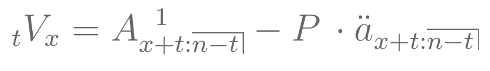
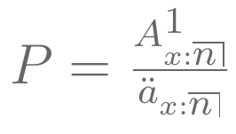
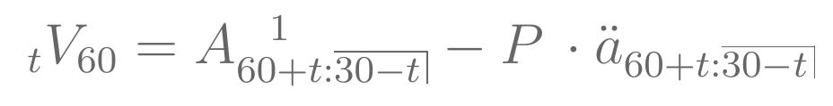
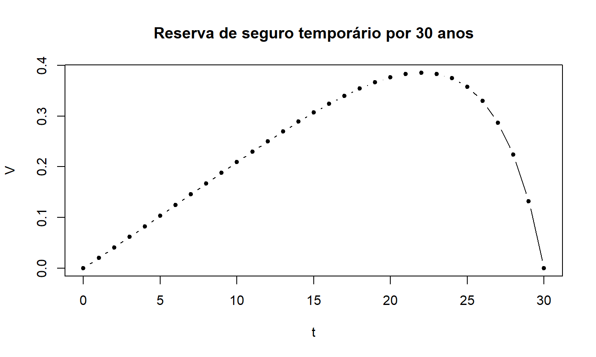
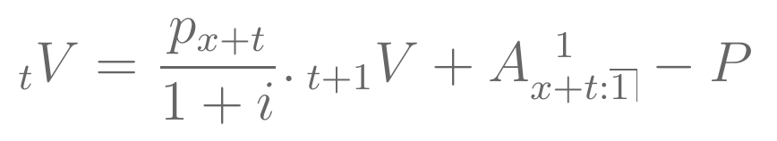
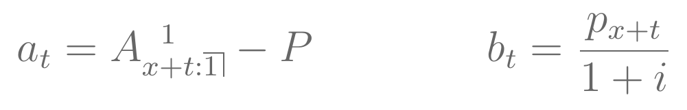
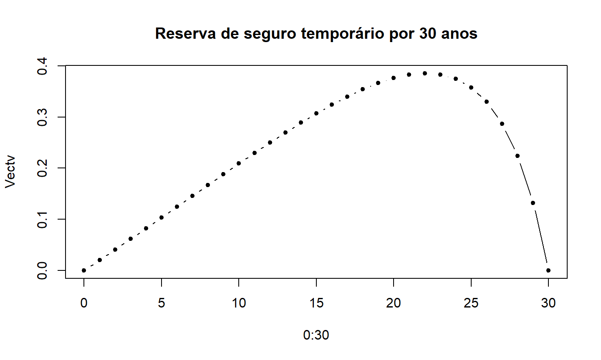

Definição de Reservas
Fórmulas de cálculo
- método retrospectivo
- método prospectivo
- fórmula recursiva
Exemplos
19 de maio de 2023
Definição de Reservas
Fórmulas de cálculo
Exemplos
A reserva de uma apólice consiste no valor que a seguradora precisa ter em um determinado momento para, juntamente com os prêmios futuros que venha a receber, consiga honrar com seus pagamentos futuros de indenizações.
Para o cálculo da reserva no tempo \(t\), assumimos que o segurado está vivo.
Reservas podem ser calculadas através de dois métodos:
\[{}_{t}V = VPA(\mbox{benefícios futuros}) - VPA(\mbox{prêmios futuros}) \]
Para os exemplos dessa aula, vamos considerar a reserva prospectiva e os seguros discretos.
\[{}_{t}V_x = A_{x+t} - P \,\cdot \ddot{a}_{x+t} \]
onde \(P=\frac{A_x}{\ddot{a}_x}\) é o prêmio anual calculado no tempo \(t=0\).
## prêmio (P = Axn(soa08Act,60)/axn(soa08Act,60))
## [1] 0.03311973
## reserva t=10 (V = Axn(soa08Act,60+10)-P*axn(soa08Act,60+10))
## [1] 0.2311368

onde \(P\) é o prêmio anual calculado no tempo \(t=0\).

## prêmio P = Axn(soa08Act,60,30)/axn(soa08Act,60,30)
## reserva t=10 (V = Axn(soa08Act,60+10,30-10)-P*axn(soa08Act,60+10,30-10))
## [1] 0.209061
Vamos visualizar a evolução da reserva com o tempo.
Para isso, vamos considerar o seguro temporário por 30 anos para um segurado de 60 anos.
Para \(t=0,1,\dots,30\), a reserva é dada por:


E se a duração de pagamento dos prêmios é menor do que a duração do seguro?
Considere um seguro de vida temporário por 40 anos para um indivíduo de 25 anos. Os prêmios são pagos antecipadamente e anualmente, por no máximo 5 anos.
Calcule a reserva prospectiva nos tempos \(t=3\) e \(t=10\).
## [1] 0.03237485
## [1] 0.06748179
## prêmio (P = AExn(soa08Act, 60,20)/axn(soa08Act, 60,20))
## [1] 0.04081326
## reserva t=10 ( V = AExn(soa08Act, 60+10,20-10)-P*axn(soa08Act, 60+10,20-10) )
## [1] 0.355253
Considere um contrato de anuidade vitalícia diferida por 20 anos para um segurado de 55 anos. Os pagamentos da anuidade são antecipados, e os prêmios são pagos anualmente durante o período de diferimento.
Calcule a reserva prospectiva no tempo \(t=10\) e \(t=30\).
## [1] 1.980102
## [1] 4.698033
\[{}_{t}V = {}_{t+1}V + VPA(\mbox{benefícios em } (t,t+1) ) - VPA(\mbox{prêmios em } (t,t+1)) \]
\[u_n = a_n + b_n .\, u_{n+1} \]
para todo \(n=1,2,\dots,m\) tal que \(u_{m+1}\) é conhecido, assim como \(\boldsymbol a = (a_n)\) e \(\boldsymbol b = (b_n)\).
\[ u_n = \frac{u_{m+1} \prod_{i=1}^m b_i + \sum_{j=n}^m a_j \prod_{i=0}^{j-1} b_i}{\prod_{i=0}^{n-1} b_i} \]
onde \(b_0=1\).
## função para encontrar solução para fórmula recursiva
recurrent = function(a,b,ufinal){
s <- rev(cumprod(c(1, b)))
return( ( rev(cumsum(s[-1]*rev(a))) + s[1]*ufinal )/rev(s[-1]) )
}
Vamos considerar o exemplo anterior de seguro de vida temporário por 30 anos para um indivíduo de 60 anos.
Fórmula recursiva:

De acordo com a equação recursiva geral, temos que \(m=n\), \(u_{m+1}=0\).
Logo, os termos da fórmula recursiva para a reserva \({}_{t}V\) são:

## Exemplo - seguro temporário ## encontrando a reserva usando a fórmula recursiva ## prêmio P = Axn(soa08Act,60,30)/axn(soa08Act,60,30) ## Sequências de a e b Vecta = Vectorize(function(t) Axn(soa08Act,t,1))(60+0:29) - P Vectb = Vectorize(function(t) pxt(soa08Act,t,1))(60+0:29)/1.06 ## Sequência da reserva com a fórmula recursiva Vectv = c(recurrent(a=Vecta,b=Vectb,ufinal=0),0)
